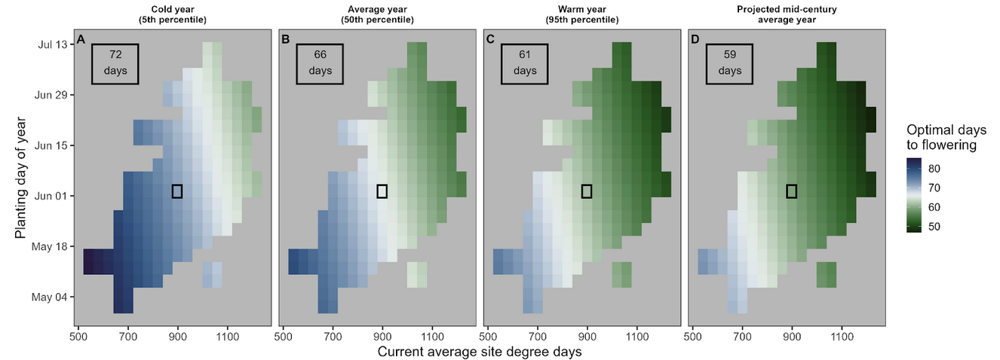

Climate drives variation in optimal phenology
46 years of multi-environment trials in sunflower

Abstract
Phenological shifts are near ubiquitous responses to climate change in both wild and agricultural systems, but the fitness consequences of these shifts are unclear. We evaluate how flowering phenology influences fitness and how climate influences the relationship between flowering phenology and fitness.
We use a large dataset of performance trials of oilseed sunflower varieties (Helianthus annuus L.) conducted since 1978 across the Great Plains of North America. We estimate the flowering time that optimizes yield (fitness) in 341 environments to quantify how climate variation impacts the optimal flowering time.
We find that temperature is a key driver of optimal phenology, with earlier and faster flowering favored in hotter years and locations. Flowering time differences explain 9% of the variation in fitness between sunflower genotypes within trials. Flowering shifts a week away from the optimum incurred substantial penalties, with a median yield reduction of 23%.
Our results indicate that the shifts to earlier phenology commonly observed under climate warming may be beneficial. In sunflower, maximizing agricultural productivity under future climates will likely require both careful selection of varieties to match new conditions as well as breeding new varieties that flower faster than material that is currently available commercially.
Context
This work builds on decades of agricultural trial data to understand how plant life-history traits and the environment interact. Our findings have important implicaitons for both evolutionary ecology and agricultural adaptation to environmental change.